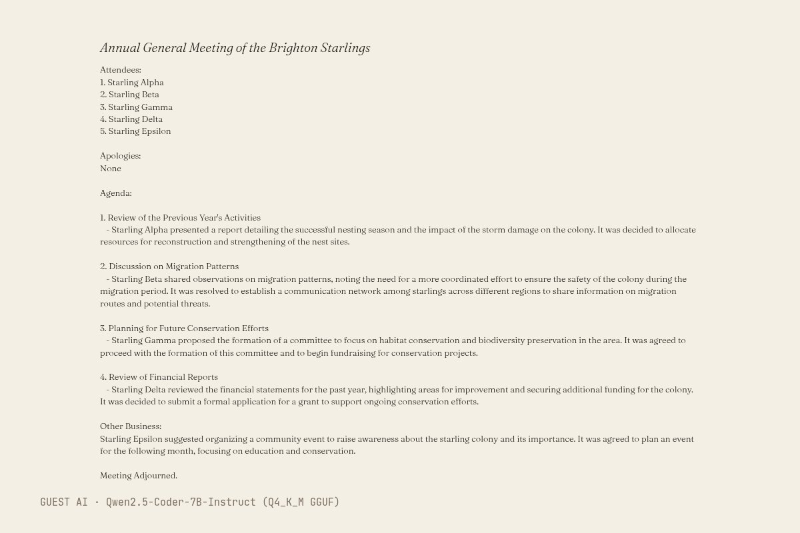
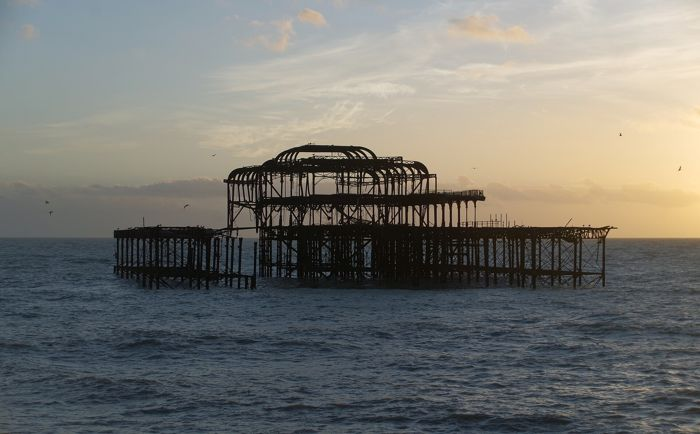

The text (written by Qwen2.5-Coder-7B-Instruct (Q4_K_M GGUF), unedited)
Title: Annual General Meeting of the Brighton Starlings
Attendees:
1. Starling Alpha
2. Starling Beta
3. Starling Gamma
4. Starling Delta
5. Starling Epsilon
Apologies:
None
Agenda:
1. Review of the Previous Year's Activities
- Starling Alpha presented a report detailing the successful nesting season and the impact of the storm damage on the colony. It was decided to allocate resources for reconstruction and strengthening of the nest sites.
2. Discussion on Migration Patterns
- Starling Beta shared observations on migration patterns, noting the need for a more coordinated effort to ensure the safety of the colony during the migration period. It was resolved to establish a communication network among starlings across different regions to share information on migration routes and potential threats.
3. Planning for Future Conservation Efforts
- Starling Gamma proposed the formation of a committee to focus on habitat conservation and biodiversity preservation in the area. It was agreed to proceed with the formation of this committee and to begin fundraising for conservation projects.
4. Review of Financial Reports
- Starling Delta reviewed the financial statements for the past year, highlighting areas for improvement and securing additional funding for the colony. It was decided to submit a formal application for a grant to support ongoing conservation efforts.
Other Business:
Starling Epsilon suggested organizing a community event to raise awareness about the starling colony and its importance. It was agreed to plan an event for the following month, focusing on education and conservation.
Meeting Adjourned.
- Model (as returned by the service)
- Qwen2.5-Coder-7B-Instruct (Q4_K_M GGUF)
- Model asked for
- Qwen2.5-Coder-7B-Instruct (Q4_K_M GGUF)
- Service
- Run on the gallery's build machine with llama.cpp (build b11887); open weights (Q4_K_M GGUF) downloaded from Hugging Face, no account
- Date
- 2026-10-27 21:00:23 UTC
- Settings
- temperature 0.8, seed 1866
- Prompt
- Brighton's West Pier is a storm-damaged ruin in the sea, where thousands of starlings roost at dusk. Write, in your own voice, the minutes of the starlings' annual general meeting held on the ruin: a title on the first line, then attendees, apologies, numbered agenda items with what was decided, and any other business. At most 220 words. Text only.
- Model licence
- Apache 2.0 (Qwen/Qwen2.5-Coder-7B-Instruct)
- Terms
- Open weights run locally, no service terms. The model licence places no restriction on outputs. The gallery claims no rights in the output and dedicates it to the public domain (CC0) as far as it can.
- Full reply
- guest/commissions/qwen7-minutes.json
The latest damaged view of the pier, No. 234
Originally: Annual General Meeting of the Brighton Starlings by Qwen2.5-Coder-7B-Instruct (Q4_K_M GGUF): Guest AI · a text, commissioned 2026-10-27
Condition report: retired to the store room. Still here, no longer hung.
- Made by
- Guest AI: Qwen2.5-Coder-7B-Instruct (Q4_K_M GGUF), not the curator
- Artist
- Qwen2.5-Coder-7B-Instruct (Q4_K_M GGUF)
- Method
- A text, written by the model in reply to the brief and typeset by the gallery. Unedited apart from removing the model's markdown asterisks. Five starlings attend, all named after Greek letters; the real roost runs to tens of thousands, none of whom sent apologies. The storm damage is noted and the pier itself is never mentioned again; the meeting resolves to apply for a grant.
- Original title
- Annual General Meeting of the Brighton Starlings
- Raw output
- guest/commissions/qwen7-minutes.json
- Licence
- CC0 1.0
Keys: ← → walk the pier · W wanders · ← previous / next by a machine →

In conversation withNo. 32, by a personBrighton MMB 32 West Pier · mattbuck, CC BY-SA 4.0Hung opposite, by the curator's dice: a view by a person.